New Music Magazine Ongaku Zensho Orange of Live/ROCKS Otoland Player Rock Catalog Rock & Guitar
Rock Magazine Rock Show Rockinf Rockin On Shinpu Journal Viva Weekly FM Young Guitar Young Rock
FM Fan
Founded in 1966 and ceased publication in 2001, this was a program guide for radio published by Kyodo News.Date
Cover
Contents/Notes
8.25 1986
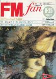
Content unknown
FM Recopal
An audiophile magazine and program guide published every other week from 1974 through 1995. There's probably more undocumented Queen content in the magazine—not only was it originally published in two divisions (East and West), it was further broken up by region in 1982, resulting in Kanto, Hokkaido/Tohoku, Kansai, Chubu, and Chugoku/Shikoku/Kyushu editions. This magazine carried a nonfiction-based music manga series that sometimes featured Queen. The list here shouldn't be considered exhaustive.Date
Cover
Contents/Notes
4.19 - 5.2 1976
West
West
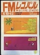
Queen Also Terrorizes Sumo! [A play on the Japanese title of their first album, Princess of Terror]
5.24 - 6.6 1982
East
East
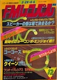
• The Trump Card is always the Queen!
7.5 - 7.18 1982
West
West
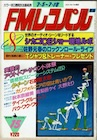
"Queen—Metamorphosis into a Miracle" comic by Shoutarou Ishimori
12.6 - 12.19 1982
Kanto
Kanto
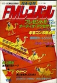
• A Big Bite of Queen! Nationwide Tour Report
4.9 - 4.22 1984
Kanto
Kanto
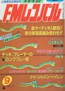
Queen vs. Van Halen
guts
guts was first published in 1969 and focused on rock and folk music.Date
Cover
Contents/Notes
Apr 1974
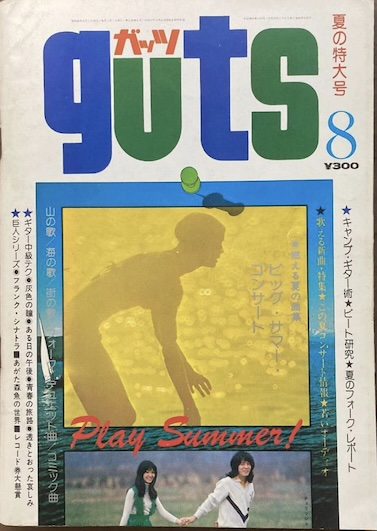
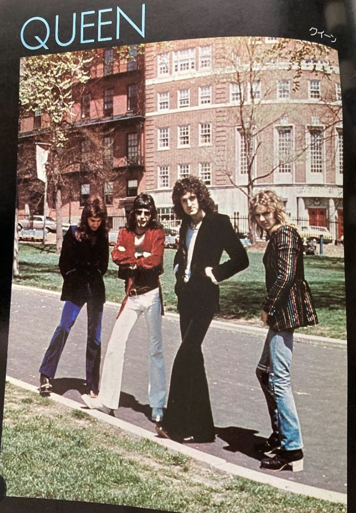
Early Queen color pinup
Mar 1975
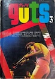
Sheer Heart Attack review
May 1975
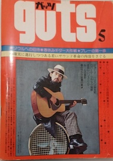
Content unknown.
Jun 1975
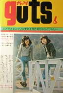
Pinup
Jul 1975
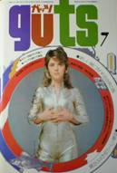
Exclusive interview
Aug 1975
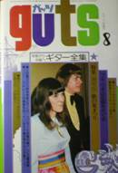
Content unknown
Oct 1975
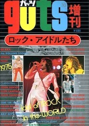
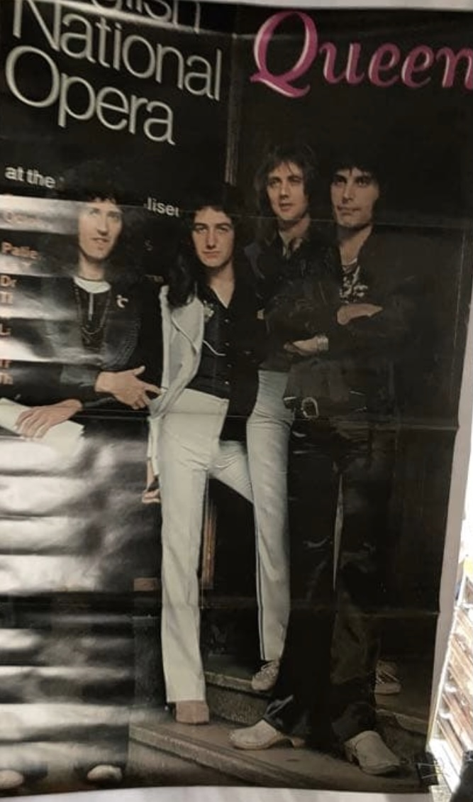
Rock Idol Special Issue vol. 1
Apr 1976
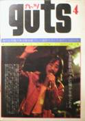
Bohemian Rhapsody feature
Apr 1976
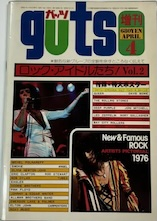
Rock Idols Special Issue vol. 2, Freddie on cover
May 1976
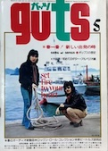
Freddie pinup
Jun 1976
• The Jewels that Spread Excitement: Queen
Jul 1976
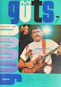
Queen's Goodbye to Japan, pinup
Aug 1976
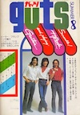
My Best Friend feature
Oct 1976
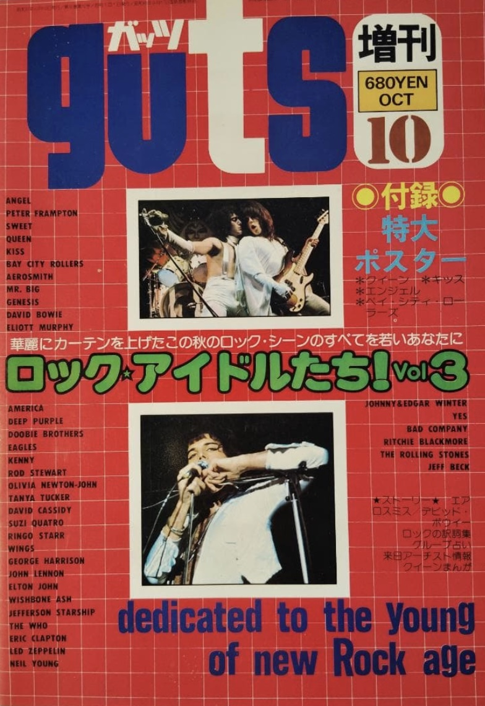
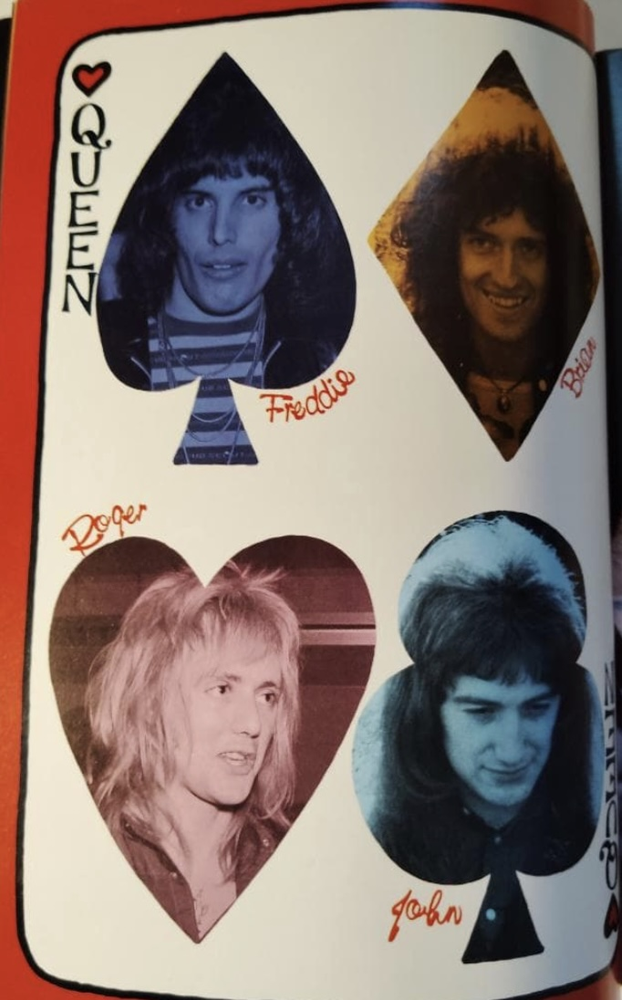
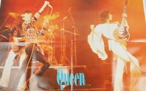
Rock Idols Special Issue vol. 3
Feb 1977
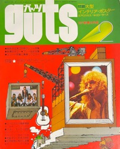
Hottest International Artists List
Mar 1977
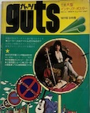
Freddie cover, ADATR feature
Apr 1977
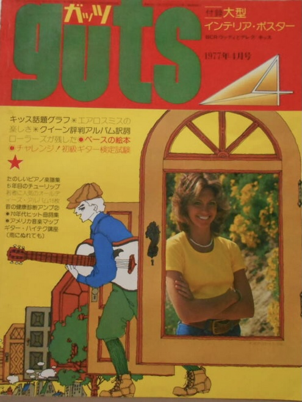
ADATR lyrics, color pinup
May 1977
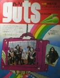
• The US Tour is a huge success!
• Queen Wins a Gold Disc
• Queen Wins a Gold Disc
Jun 1977
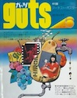
Extra large 8-fold poster
Jul 1977
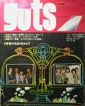
• Queen's Freddie Mercury
Aug 1977
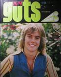
• Queen's Dressing Room is a little Uncouth
Sep 1977
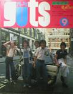
Content unknown
Oct 1977
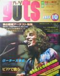
• How Long will Queen's Creative Challenges Continue?
Dec 1977
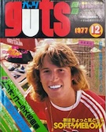
Freddie Mercury pinup
Jan 1978
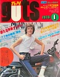
• Western Music Review of 1977
Queen included on 1978 calendar poster
Queen included on 1978 calendar poster
March 1978
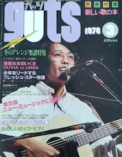
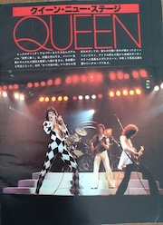
• Queen's New Show
Apr 1978
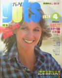
Feature, details unknown
Jul 1978
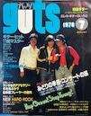
• Queen's New Show (Jazz Tour)
Aug 1978
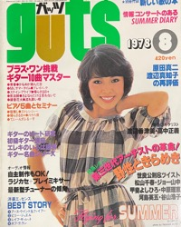
• Queen's Latest Performances
Mar 1979
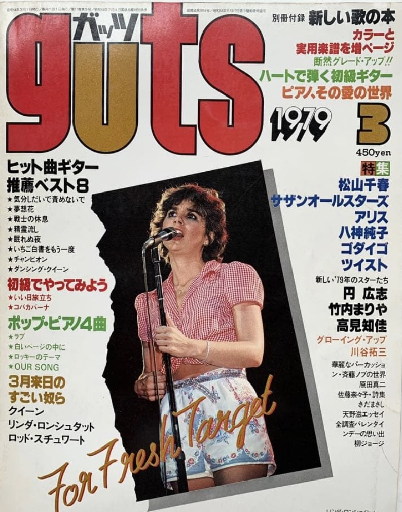
• Queen's 3rd Trip to Japan
Apr 1979
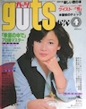
• The Evolution of Queen's Sound by Tenpei Matsubayashi of Warner Pioneer
May 1981
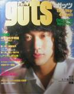
• Japan Concerts
Pinup
Pinup
INROCK
Founded in 1979, this magazine focuses less on the musical aspects of an artist and more on their personal lives.Date
Cover
Contents/Notes
Spring 1979
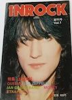
• Queen Short Story
• Queen in America
• Queen in America
Autumn 1980
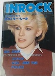
• Queen the Game
Autumn 1984
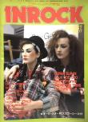
• Queen in Montreux
Came with "All-Star Sticker", unsure of who was featured
Came with "All-Star Sticker", unsure of who was featured
JAM
Founded by former Music Life editor Haruko Minakami, Jam only ran from 1978 to 1981.Date
Cover
Contents/Notes
Jun 1979
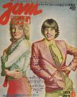
Oct 1979
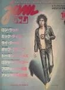
Roger Taylor feature
Light Music / New Light Music
This magazine was first published in 1969 by the Yamaha Music Foundation and was originally titled Young Yamaha. It ran under the Light Music title through January 1976, when it changed to New Light Music before folding not long after. The light music genre in Japan is analogous to the Easy Listening category in the West, but this publication seemed to feature rock acts regardless.Date
Cover
Contents/Notes
Jul 1974
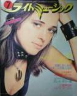
Content unknown, probably an introductory blurb
Aug 1974
Notable for a derpy color pinup that went 0 for 4: "Deacon John" [Brian May], "Fleddie Mercury" [Freddie Mercury], "Roger Taylor" [John Deacon], and "Drian May" [Roger Taylor].
Jan 1975
Queen Photo Gallery
Apr 1975
Special Rock Guitar issue, Queen pinup
May 1975
Queen Interview: Before they get to Japan
Jun 1975
Color photospread
Sep 1975
Queen Phone Interview
May 1976
BoRhap review
Jun 1976
Queen Overseas Activities Report
Oct 1976
Score of of A Lonely Cry—the cancelled Japanese single release of See What A Fool I've Been. See here for more details.
MC Sister
A fashion magazine that was popular in the Showa Era. MC stands for Men's Club, its sibling magazine.Date
Cover
Contents/Notes
Aug 1977
• Queen's Splendid Stage Shots
Melody House
I can't find much info regarding this publication other than it began in 1977.Date
Cover
Contents/Notes
Apr 1977
Queen vs. Bay City Rollers. Covershot.
New Music Magazine
Founded in 1969.Date
Cover
Contents/Notes
Mar 1974
This is one of the first appearances of Queen in Japanese media, tying Music Life. The one-page article discusses their aesthetic and introduces each band member.
July 1975
• Queen's Budoukan Concert Report
Ongaku Zensho (Music Encyclopedia)
I don't know much about this publication other than it began in 1976 and featured foreign acts.Date
Cover
Contents/Notes
Oct 1976
Content unknown
Orange of Live / ROCKS
I can barely find any info on this magazine, and I have no idea what they thought the original title meant. It seems to have changed its name to ROCKS in late 1976.Date
Cover
Contents/Notes
May 1975
B&W photos
Jun 1975
• Queen in Japan Special Feature, Cover
***I am looking for this magazine. Please email me if you have one for sale.
この雑誌を探しているのですよ！メールしてください。
***I am looking for this magazine. Please email me if you have one for sale.
この雑誌を探しているのですよ！メールしてください。
Aug 1975
Queen's Success in America
Jun 1976
ANATO info
Aug 1976
• "The Bad Reviews Hurt us but We've Finally gotten Ahead of the Press!" Brian May feature, Cover
Nov 1976
Queen feature, details unknown
Jan 1977
Content unknown
Feb 1977
• The Queen Sound is so Beautifully Complex
May 1977
• Music for the Head or Body?
Queen pinup
Queen pinup
Jun 1977
• Queen's Aware of the Criticisms, but they're still Praised for their Musicality
Jul 1977
• Queen: The Aspiration of Young People
Aug 1977
• US Concert Report, more
Nov 1977
Breakup rumors, moving to America, and solo careers
Jan 1978
NOTW feature
Apr 1978
• The Artistry of Queen's Music
May 1978
Freddie poster
Jun 1978
A translation of a Penny Valentine article (I believe from CREEM magazine). The same article seems to have been printed in Music Life May - Jul 1978.
Otoland
A short-lived teenybopper magazine aimed at high school girls.Date
Cover
Contents/Notes
Apr 1977
Queen color feature
The Young Mates Music Player
Published by Shinko Music from 1968 - 2023. It was geared toward guitar enthusiasts and usually showcased Brian out of the four Queen members.Date
Cover
Contents/Notes
July 1975
Brian May Interview
July 1976
Cover, Brian content, details unknown
Dec 1977
Cover, Brian content, details unknown
May 1979
Brian content, details unknown
Nov 1981
Brian May pinup calendar
Rock Catalog
A special edition magazine published by Ongaku Senkasha.Date
Cover
Contents/Notes
Spring 1977
Vol. 1
Vol. 1
• Queen at Edinburgh Special Interview, possibly more
Nov 1977
Vol. 2
Vol. 2
Queen comic, details unknown
Rock & Guitar
A special edition published by Ongaku Senkasha.Date
Cover
Contents/Notes
Sep 1977
Brian May content, details unknown
Sep 1977
Brian May color pinup
Rock Magazine
Founded by DJ and musician Agi Yuzuru, this semi-underground music zine was published in the Kansai region from 1976-1983. It had a decidedly more cynical, edgier angle than mainstream publications of the time. In spite of its name, Rock Magazine's focus began to shift more towards punk and New Wave acts as time went on.Everything I've read on Agi Yuzuru suggests that he had a difficult personality, to put it mildly, but he made a lot of connections within the Japanese music scene, especially in the Kansai area. Yuzuru was also a frequent contributor to Pops in Picture, where he appeared as a dark foil to the presenter, Dede.
Date
Cover
Contents/Notes
Mar 1976
The inaugural volume contains a manga spoof of the story of Queen's formation.
May 1976
Vol. 2 contains a black and white photospread from Queen's 3/29 Osaka tour date (unsure which show, as there were two that day), as well as a spoof of the covers for their upcoming album.
Aug 1976
Vol. 3 contains some off-record gossip.
In the fanclubs section, there is a listing for "The Queen Fan Club" with a contact name and an Osaka-area address that matches neither the QFCJ nor the Official Queen Fan Club, which would start up in the next couple of months and was based out of Tokyo. The QFCJ was based out of Osaka, but it was in the process of dissolving at this point so I'm not quite sure what this listing refers to.
An ad for the doujinshi Lucifer appears in the back, and a somewhat bizarre angry anonymous note from someone out to destroy Queen fangirls appears in the letters section. Given the content of this issue I can't help but wonder if someone on the Rock Magazine staff wrote it.
In the fanclubs section, there is a listing for "The Queen Fan Club" with a contact name and an Osaka-area address that matches neither the QFCJ nor the Official Queen Fan Club, which would start up in the next couple of months and was based out of Tokyo. The QFCJ was based out of Osaka, but it was in the process of dissolving at this point so I'm not quite sure what this listing refers to.
An ad for the doujinshi Lucifer appears in the back, and a somewhat bizarre angry anonymous note from someone out to destroy Queen fangirls appears in the letters section. Given the content of this issue I can't help but wonder if someone on the Rock Magazine staff wrote it.
Oct 1976
The only Queen content vol. 4 contains is a letter from a girl regarding the prior issue and a BL Queen drawing that is quite intricate and beautiful.
Rock Show
A quarterly magazine published by Shinko Music, the publisher of Music Life. I'm not sure how long it ran.Date
Cover
Contents/Notes
Jan 1977
Queen's Hyde Park concert coverage
Mar 1977
• Queen A to Z
Sep 1977
Content unknown
Feb 1978
Freddie Mercury content, details unknown
Apr 1978
• The Roger Taylor Story
Possible other Queen content
Possible other Queen content
Feb 1979
• Queen in New Orleans
Jun 1979
Content unknown
Dec 1982
• Queen Memories in Japan
Rockin'f
First published in July 1976, Rockin' f was considered analogous to the English language magazine Melody Maker. In the 80s it began to focus on heavier metal bands.Date
Cover
Contents/Notes
Jan 1978
Color photospread
Jan 1979
Brian Cover, Brian feature, Queen poster
Jun 1979
Queen concert report
Sep 1980
Feature, details unknown
Nov 1982
Brian cover, Roger Taylor interview
Nov 1984
Photo gallery
Aug 1985
Freddie Mercury content, details unknown
Rockin' On
Launched in 1972 by a university student and music critic.Date
Cover
Contents/Notes
Jan 1975
• Listening to Sheer Heart Attack
May 1975
Queen feature, details unknown
Jul 1975
Cover, content unknown
Jan 1976
ANATO lyrics, possibly more
May 1976
• Keep Myself Alive: Queen
Roger Taylor Cover
Roger Taylor Cover
Oct 1976
• Poking the Blind Spot of Queen Journalism
Feb 1977
• Why did Queen choose to sing in Japanese?
Jan 1978
Content unknown
Apr 1978
• Blue-Eyed Queen is British Celluloid [I have no idea what that means]
May 1978
• Queen is a Large Color Refrigerator [Once again, no idea]
Summer 1978
Yoichi Satou Rockin' On Photo Collection
Yoichi Satou Rockin' On Photo Collection
Photos from 4.19.75 tourdate
Jan 1979
Queen interview
Feb 1980
Cover, content unknown
Jul 1980
• Unclassifiable Guitarist Brian May
Sep 1980
Cover, content unknown
Aug 1981
Content unknown
Jan 1982
Content unknown
Mar 1983
An Invitation from Queen
Aug 1984
Color photospread
Jul 1989
Content unknown
Shinpu Journal (New Music Journal)
A prominent music magazine of the 70s and 80s.Date
Cover
Contents/Notes
Jun 1975
Queen pinup
Jun 1876
Color pinup
Mar 1979
Color photospread (Jazz tour)
Viva
Published by Ongaku Senkasha.Date
Cover
Contents/Notes
May/June 1979
Special Edition, Brian on the cover, Japan Tour photos
Dec 1982
Content unknown
Jan 1983
Freddie Mercury content, details unknown
Jun 1983
Content unknown
Jun 1984
Content unknown
Nov 1984
Content unknown
Apr 1985
Content unknown
Weekly FM (Shuukan FM)
Another FM program guide of the Showa Era. It was also divided into Eastern and Western editions.Date
Cover
Contents/Notes
7.7 - 7.20 1975
West
West
Queen pinup calendar
4.19 - 5.2 1976
East
East
Queen's Visit to Japan
1.8 - 1.21 1979
West
West
Content unknown
4.30 - 5.2 1979
East
East
• Rock Heroes Queen
10.25 - 11.7 1982
West
West
Japanese Tour Coverage
7.10 - 7.23 1989
Chukoku/Shikoku/
Kyushu
Chukoku/Shikoku/
Kyushu
The Miracle info
Young Guitar
Young Guitar began publication in 1969 and was originally a folk music magazine. It's published by Shinko Music and as far as Queen was concerned usually focused on Brian.Date
Cover
Contents/Notes
May 1976
• Queen on Fire again at the Budoukan, B&W photos
Feb 1978
Brian May Special Feature, Covershot
Mar 1979
Covershot only?
Aug 1980
Covershot only?
May 1981
• All about how Brian May Played on the Previous Japanese Tour
Young Rock
I can't find much info on this magazine other than it was published by Tokuma Shouten and often featured "the Big 3" in the late 70s—Aerosmith, KISS, and Queen.Date
Cover
Contents/Notes
1977
Special Edition
Special Edition
• '77 Rock: Queen
Mar 1977
Special Edition, content unknown
Apr 1977
This issue is almost all KISS, but does contain a Queen US tour report
Feb 1978
Queen US Tour Report
Apr 1978
Freddie Mercury Interview on New Album, Jazz
Spring? 1978
Cover, content unknown
Feb 1979
Queen Times [I believe this is a Queen news column]
Apr 1979
Queen Times [I believe this is a Queen news column]